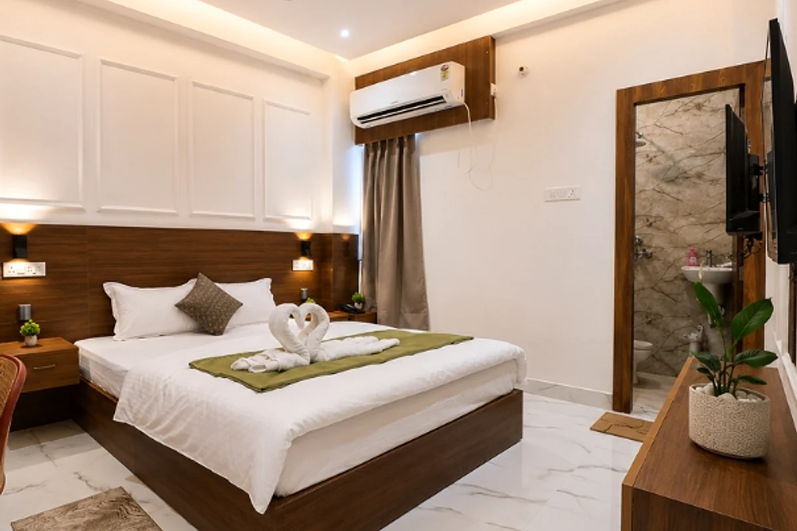

Facilities
Facilities at Hotel Vastu Premium
Useful stay essentials plus spaces for events and business travel, based on the current Hotel Vastu Premium website.
24-hour securityRound-the-clock guest-safety support is listed on the current hotel website.
Free Wi-FiInternet access is listed across rooms and common areas.
Parking & fire safetyDedicated parking and a certified fire-safety system are listed.
Work deskWork-friendly room facilities are listed for business travellers.
Airport transportPickup/drop support is listed; confirm current availability before travel.
Modern bathroomsShower and hot-water facilities are listed for guest rooms.

Banquet & events
Space for meetings and celebrations
The current hotel website presents banquet and event facilities for corporate meetings, conferences and social gatherings. Contact the hotel to confirm seating, catering and setup options for your event.
Enquire about an eventCorporate stays
A practical base for business travel
Corporate-stay support is featured on the current Hotel Vastu Premium facilities page, alongside Wi-Fi, work desks and guest-support services.
Explore rooms
Need to confirm a facility?
Facilities and service availability can change. Call the hotel or send an enquiry before making plans around a specific service.